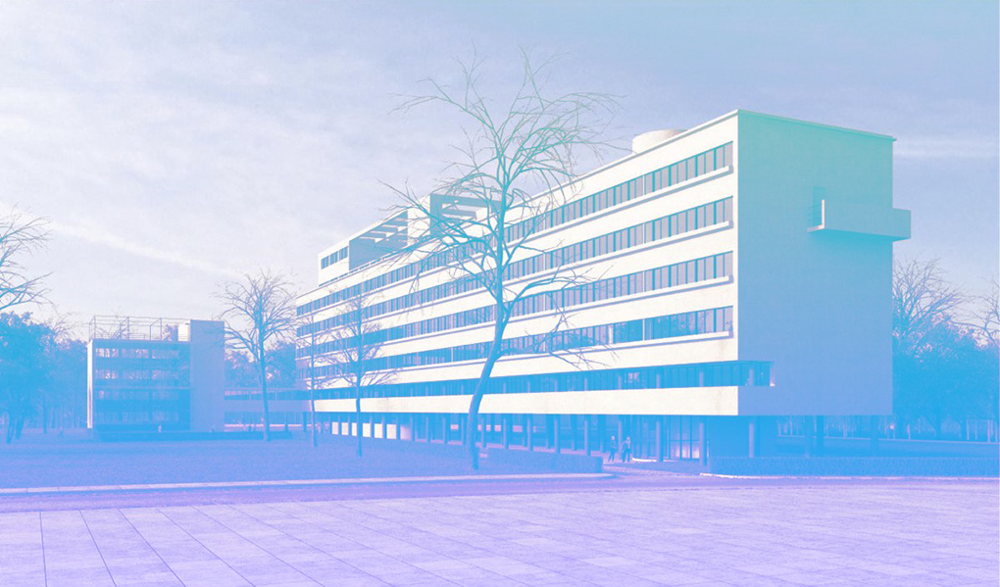

Дом Наркомфина
Жилой дом переходного типа, построенный в 1930 году по проекту архитекторов Моисея Гинзбурга и Игнатия Милиниса для работников Народного комиссариата финансов СССР (Наркомфина). Находится в Москве на Новинском бульваре по адресу дом № 25, корпус 1. Дом Наркомфина является памятником архитектуры конструктивизма.
Здание находится в аварийном состоянии и уже трижды включалось в список «100 главных зданий мира, которым грозит уничтожение».
История создания
Дом Наркомфина построен по проекту одного из идеологов советского конструктивизма Моисея Гинзбурга, в соавторстве с архитектором Игнатием Милинисом и инженером Сергеем Прохоровым. Ранее, в конце 1925 года была образована творческая организация конструктивистов, названная Объединением современных архитекторов (ОСА). Эта организация оказала значительное влияние на развитие теоретической мысли и ряд наработанных в ней решений позднее был использован при строительстве жилого комплекса.
Идеология
Несмотря на то, что дом Наркомата финансов часто именуется «домом-коммуной», автор проекта М. Гинзбург считал его «домом переходного типа» (от «буржуазного» дома к «социалистической» коммуне), поскольку в нём не полностью уничтожалась семейная структура, как это предполагалось в домах-коммунах. Называя его так, Гинзбург имел в виду, что обитатели оценят удобства общественного обслуживания и постепенно перейдут к новому бытовому укладу.
В отличие от домов-коммун в основе замысла Дома Наркомфина была идея создания комфортной жилой среды. Его структура намного богаче, чем структура многих других имевшихся тогда аналогов. Авторам проекта Гинзбургу и Милинису удалось скомпоновать жилые ячейки в единый корпус настолько необычно, что это заинтересовало даже самого Ле Корбюзье, побывавшего в Доме Наркомфина и посетившего лично квартиру Милютина.
Идея комфортабельного жилища нового типа требовала не только иной функциональной организации, но и нового пространственного воплощения.
В конце 1920-х — начале 1930-х годов было построено шесть экспериментальных «коммунальных» домов переходного типа, причём три из них разработаны при непосредственном участии М. Гинзбурга как автора проекта.
Архитектура
Под строительство дома для работников Наркомата финансов была отведена территория двух усадеб, выходивших на Новинский бульвар. Все планы застройки отведенного участка предусматривали полный снос существующих домов и дворов, включая флигели и двор дома Шаляпина. В конечном итоге ни одно строение ради дома Наркомфина не снесли.
В проектной документации дом именовался 2-м домом СНК и планировался как многофункциональный комплекс, состоящий из четырёх корпусов, выполняющих разные функции: жилой комплекс, коммунальный центр (в свою очередь, включающий в себя столовую, физкультурный и читальный залы), детский корпус (детский сад и ясли) — он не был построен и впоследствии частично занял корпус столовой и библиотеки, и самостоятельного служебного двора с размещенными на его территории механической прачечной, сушилкой, гаражом и др. Дом должна была окружать обширная парковая территория.
Пространственная организация жилого комплекса
Пространство перед общественным корпусом композиционно выделялось квадратной площадкой, на которой планировалось разместить небольшое здание для детского сада. Все три объёма, различные по массам, строго ритмически уравновешенные, увязанные между собой, составляли композиционное ядро комплекса, сбалансированное в пространстве корпусом прачечной, ориентированным на Новинский бульвар. Перед прачечной также была устроена квадратная площадка, служившая своеобразным парадным пространством, связывающим комплекс с городом. Корпус прачечной так же, как и жилой дом, был частично поднят на колоннах, что освобождало для прохода пространство первого этажа. Пройдя под корпусом прачечной через «парадный двор» перед входом с Новинского бульвара, по диагональной аллее можно было попасть в общественную зону комплекса или по другой аллее через жилой корпус в уровне «открытого» первого этажа — в парк за домом, где была организована своеобразная видовая площадка.
Основной объём жилого дома Гинзбург расположил на территории двух усадебных садов, отмечая в пояснительной записке к проекту:
В виду неровности участка, вызывающего в подобных случаях устройство большой поверхности цоколя, в настоящем случае дом поднят в большей своей части на высоту 2,5 метров на отдельных столбах, что является более экономичным и, кроме того, сохраняет нетронутой площадь парка.
Функциональные характеристики будущего здания были определены техническим заданием, составленным Николаем Милютиным, который в указанные годы (1924—1929) исполнял обязанности наркома финансов РСФСР и выступал в качестве заказчика жилого комплекса. Сметная стоимость строительства составила 10 млн рублей.
Архитектура жилого дома
Подлинным новаторством для конца 1920-х годов была архитектура жилого корпуса. Она была настолько необычна и впечатляюща, что лишь немногие смогли увидеть в ней образ жилого дома будущего, черты которого он, безусловно, содержал.
Жилой корпус представляет собой шестиэтажное здание длиной 85 м и высотой 17 м. Ориентация здания на запад и восток. В торцах здания расположены лестничные клетки, всего две на всю длину. Первый этаж, высотой 2,5 метра, состоит из круглых столбов — элементов каркаса здания, что было связано со стремлением сохранить парковую территорию и с убеждённостью Гинзбурга в том, что первые этажи менее пригодны для жилья.
По второму и пятому этажам здания лестницы связаны широкими, около 4 м, коридорами, освещёнными с восточной стороны горизонтальными лентами окон. В квартиры жильцы попадают из этих коридоров.
Дом был задуман как «коммунальный» с изолированными квартирами на 50 семей, общей численностью около 200 человек, и имеющимся общественным обслуживанием. В своем проекте авторы поставили задачу сохранения только социально-бытовых условий переходного типа (например, несмотря на наличие общей столовой, в квартирах сохранялись маленькие кухни).
Весь шестиэтажный объём здания разбит по горизонтали на две части. Нижние три этажа отведены под квартиры большой площади, в которых должны были проживать семьи, сохранившие более полно свой старый бытовой уклад. Поэтому здесь имелась маленькая кухня, позволяющая индивидуально приготовлять пищу. Верхние три этажа занимают малометражные квартиры на одного или двух человек — так называемая ячейка Стройкома РСФСР тип «F». Все квартиры двухэтажные с входами из одного коридора пятого этажа. Квартиры имели две планировки: либо с лестницей от входа наверх (в двухэтажную гостиную со стеклянной стенкой) и опять наверх (в спальню), либо с длинной лестницей вниз, в такую же гостиную и спальню, расположенные на одном уровне. Таким образом каждая квартира состоит из двух частей. Одна часть её имеет высоту 3,6 м, другая — 2,3 м. Последняя представляет собой спальную нишу, она освещена прямым светом: имеется небольшая душевая кабина с умывальником. В каждой квартире есть отдельная передняя и туалет, расположенный у самого входа. В малометражных квартирах нет кухонь. Жилая комната оборудована небольшим «кухонным элементом» для индивидуального приготовления пищи. Площадь каждой ячейки составляет 33—34 м², но её кубатура благодаря многоярусной планировке соответствует кубатуре квартиры, в полтора раза большей по площади.
Квартиры нижних этажей трехкомнатные. Жилая площадь в них примерно 57-60 кв. м. Как и малометражные, они двухъярусные. В нижнем ярусе каждой квартиры размещены передняя, кухня и общая жилая комната двойной высоты. Из передней вход в общую, высотой 5 м, комнату, площадь которой равна 25 кв. м. Из передней же внутренняя лестница ведет во второй ярус. Здесь две спальни, ванная и туалет. Спальни отделены узкой площадкой с галереей, открывающейся в общую жилую комнату. Высота помещения второго яруса 2,3 м.
В обоих концах жилого корпуса, по обе стороны лестницы со входом непосредственно с лестничной клетки, размещены квартиры «2F» (соединенные по две ячейки «F»), и занимающие площадь, равную двум сдвоенным малометражным квартирам (кв. 14 и 29). В этих квартирах две жилые комнаты высотой 3 м. Передняя, ванная, туалет, кухня и столовая имеют высоту 2,3 м. По существу, это обычные (одноярусные) квартиры с несколько непривычным распределением высот, а потому и с более интересным пространственным решением.
И наконец, в самой верхней части дома, на уровне плоской крыши, сделано несколько комнат типа общежития, где реализовны опубликованные Н. Милютиным в «Соцгороде» жилые ячейки на одного человека. Часть из них — на одного человека, часть — на двух. Между каждой парой комнат расположены душевая и умывальная комнаты.
Здание включает в себя около десятка типов квартир, в том числе:
- Квартира типа F — основное количество жилых ячеек в доме минимального размера. В одни из них можно попасть из остекленной галереи или коридора, спускаясь по внутриквартирной лестнице в общую комнату, а в другие — поднимаясь в неё также по аналогичной лестнице.
- Квартира типа K — 8 квартир для больших семей располагались в центральной части дома между лестничными клетками. Квартиры представляли собой двухъярусные жилые ячейки высотой каждого этажа 2,3 метра, при этом часть квартиры имела высоту потолка 4,6 метра, и в ней находилась общая жилая комната, выполняющая функции гостиной. На нижнем ярусе были устроены коридор, передняя, терраса и кухня, а в верхнем — две спальни размером 19,9 и 12,1 м². Кроме открытой террасы на втором этаже, для отдыха на воздухе и принятия солнечных ванн была предназначена также плоская крыша с разбитым на ней цветником.
- Квартира типа 2F. Сочетание разных жилых ячеек позволило избежать повторения галерей и коридоров на каждом этаже и сделать их светлыми, а во всех квартирах обеспечить сквозное проветривание.
Фасады жилого корпуса выглядят по разному, с восточной стороны, от Садового кольца — длинные ленточные окна и открытая галерея второго этажа. С противоположной западной стороны иная картина: большие квадраты остекления двухсветных общих комнат-гостиных и небольшие окна кухонь. В результате все спальни в доме ориентированы на утреннее солнце, а гостиные на вечернее.
Принцип компоновки жилых ячеек, подобный применённому в проекте дома Наркомфина, был реализован в ряде проектов и на Западе, в частности, в построенном в Бреслау (Вроцлаве) по проекту Ганса Шаруна общежитии для холостых (1929 год). Наличие коридора, обслуживающего несколько уровней, характерно для жилых единиц Ле Корбюзье.
Обследование дома Наркомфина, проведенное в 1994 году профессором МАрхИ Еленой Овсянниковой и швейцарскими студентами из Женевы, которыми руководил Жан-Клод Люди, показало, что его внутренняя структура оказалась ещё сложнее, чем было заявлено в проекте. Нестандартные квартиры, как оказалось, были на каждом этаже, хотя большинство их — типовые. Общее число вариантов жилых ячеек могло доходить до одиннадцати (включая помещение для консьержа, «студию» на верхнем этаже, общежитие на кровле и пентхаус самого Милютина). Характерно, что в конце коридора пятого этажа находилась общая кухня, организованная уже в 1940-е годы, а из самого коридора был доступ в чуланы для хранения вещей, не всегда помещавшихся в ячейки «F».
Проектные и технологические решения дома Наркомфина
Дом был возведен в 1928—1930 годах с применением новинок тогдашней строительной индустрии, в том числе цельнолитого железобетона (выдержавшего впоследствии и бомбежки и многолетнее отсутствие ремонта), а также новых материалов. Он построен на колоннах, это висячая (каркасная) конструкция, что создает устойчивость при оползнях и колебаниях почвы — под домом течет подземная река Синичка, заключенная в трубу. Несущий каркас с сеткой круглых в плане колонн диаметром 350 мм связан в продольном и поперечном направлениях железобетонными прогонами. Наружные стены, являющиеся по сути облегченными термоизоляционными щитами, отнесены на консолях от колонн каркаса, в результате чего колонны оказываются внутри здания. Технологические решения плоской кровли с системой водостоков, теплоизоляцией «торфоплитами» из прессованного торфа и гидроизоляцией битумом следовали схеме, разработанной ведущим германским специалистом по плоским крышам Эрнстом Маем.
В доме Наркомфина в 1929 году был проведен эксперимент по цветовому решению квартир, которым руководил специалист из Баухауса профессор Хиннерк Шепер. Шепер выполнил цветовое оформление интерьеров дома, для чего был на год откомандирован в Москву. Стены в квартирах не оклеивались обоями, а гладко окрашивались — теплые гаммы колеров для одних квартир и холодные для других. Теплая гамма была основана на оттенках жёлтого и охры, холодная — голубого и серого. Обе были реализованы в двух вариантах: сначала в сильной, а потом слабой насыщенностью колеров. Образцы эскизов цветового решения интерьеров типовых квартир дома Наркомфина по Шеперу представлены в книге Е. Овсянниковой и Е. Милютиной Жилой комплекс «Дом Наркомфина», Екатеринбург: Tatlin, 2015 — 64 с.
Важную роль в сооружении комплекса сыграл инженер Сергей Львович Прохоров (1899—1974). Согласно предложенному Прохоровым решению, железобетонный каркас здания, несущие стены из блоков, а также водостоки и вентиляционные вытяжки размещены внутри здания; снаружи расположены лёгкие несущие стены и ленточные окна. Прохоров создал несколько новых материалов (фибролит, ксилолит, торфоплиты и камышит) и организовал производство шлакоблоков («бетонитовых камней») прямо на стройплощадке. По мнению профессора МАрхИ Елены Овсянниковой, без участия этого инженера, хорошо освоившего немецкую технологию изготовления цементных блоков и предложившего ряд нововведений по ходу строительства, дом Наркомфина не удалось бы построить столь успешно.
Корпус общественного обслуживания, названный авторами «коммунальным», представляет собой замкнутый четырёхэтажный, почти кубический объём со стороной куба около 10 метров. Связан с жилым корпусом переходом на уровне второго этажа. Корпус предназначался для размещения общей кухни-столовой, библиотеки и других бытовых и общественных помещений.
Сдача дома Наркомфина по времени (1931 год) совпала с критическим переломом в судьбе архитектуры в СССР: все профессиональные объединения были распущены, а вместо них возник Союз советских архитекторов, призванный определять облик новой советской архитектуры. Конструктивизм и рационализм были заклеймены как «формализм» и иностранные заимствования, чуждые советскому человеку. В архитектуре был объявлен курс на «освоение классического наследия».
Нарушение концептуального замысла и проектных решений жилого комплекса после окончания строительства
В 1932—1934 году на территории жилого комплекса (вдоль его южной границы) по проекту архитектора С. Леонтовича был построен жилой дом работников Совнаркома (дом 25 корп. 10), композиционно никак не связанный с комплексом. В итоге сохранение усадебных построек по линии Новинского бульвара, а также строительство в границах первоначально отведённого участка ещё одного жилого дома, чужеродного комплексу, не позволило полностью осуществить авторский замысел по организации пространства.
К началу 1940-х годов участок вдоль северной границы территории жилого комплекса (за дворовым фасадом корпуса прачечной во всю его длину, и в глубину двора вплоть до дома Наркомфина с его восточной, северной и частично с западной сторон) был выделен под ведомственный гараж СНК РСФСР, позднее Совмина РСФСР, его территория площадью около гектара покрыта асфальтом, гараж обнесён забором. Просуществовал до 1965 года.
В середине 1930-х годов в виду острого дефицита жилья были застроены все пролёты между столбами-опорами первого этажа расположением дополнительных квартир (сверх 50-ти проектных) с частичным заглублением их в цоколь, в общий тамбур которых (на две квартиры) с улицы можно было попасть спуском по четырём ступенькам вниз. В северной части цокольного этажа организована служебное общежитие, третье в доме. Пристроено служебное помещение к южному фасаду, надстроен коммунальный корпус.
Разработанный авторами проекта социально-бытовой уклад жизни, заложенный в основу структуры жилого комплекса, оказался неосуществимым в условиях жизни тех лет, к тому же жильцы дома в большей части были психологически неподготовлены к таким переменам. Не был построен жилой корпус второй очереди, не был построен комплекс служебного дворика, объединяющего механическую прачечную, гараж для жильцов, котельную. Сооружена была лишь прачечная, широко использовавшаяся жильцами лишь в первые годы, а после войны перешедшая в ведомственное подчинение.
Следует сказать, что контингент живущих был в какой-то мере однородным лишь в первые годы после заселения дома. После арестов 1937—1938 годов и окончания Великой Отечественной войны он существенным образом изменился. Практически все трёхкомнатные квартиры нижних этажей превратились в коммунальные. Как пишет в своих воспоминаниях о Доме Наркомфина Екатерина Милютина: Квартиры для одиночек заселили семьями, семейные сделали коммунальными. Вместо закрытой столовой (коммунальный корпус) на пятом этаже сделали коммунальную кухню с рядами плит и корыт. Детский сад закрыли, коммунальный корпус превратился в типографию. Прачечная сохранилась, но она постепенно перестала обслуживать жильцов. В конце концов дом передали в ЖЭК, покрасили немыслимой жёлтой краской и перестали ремонтировать.
Критика проекта
С технической стороны
Объектом критики, в первую очередь со стороны качества использованных строительных материалов, стали несущие стены, так как жилой корпус ни разу не ремонтировали за все 80 лет его существования. Штукатурка фасадов осыпалась, а стены из кустарно выполненных цементных и шлаковых блоков, сделанных прямо на стройке, разрушались. Наполнителями в цементном растворе служили разные подручные материалы, в том числе, металлургический шлак, солома, камыш.
Каркасная конструкция дома на ножках весьма затруднила устройство в нём вертикальных коммуникаций, не говоря о промерзании нижнего жилого этажа. Канализационные стояки пришлось утеплять и пропускать в нестандартных, специально утолщенных колоннах, что первоначально не учитывалось в эскизном архитектурном решении. Ряд проблем вызвала и плоская кровля и связанные с ней протечки. Исполнение такой кровли требует особой тщательности и качественных материалов, которые в период строительства можно было достать только благодаря инициативе заказчика ранга Милютина. Такая кровля требует постоянного ухода — прочистки загрязненных или замерзших внутренних водостоков, починки покрытия, регулярного сбрасывания снега.
Использованный во внутренней отделке дома «камышит» оказался плохим звукоизолирующим материалом, в частности, в качестве внутренних перегородок между первоначально «спальными комнатами», оказавшихся заселённых различными семьями. По этому поводу было высказано много критических замечаний. К моменту окончания войны вентиляционные шахты оказались забитыми, вытяжная вентиляция повсеместно не работала.
Эксперимент с устройством раздвижных горизонтальных окон «не достиг цели и вызвал нарекания жильцов». Конструкции скользящих деревянных рам, сходные с изобретенными Ле Корбюзье и Пьером Жаннере, были доработаны с учетом российского климата. Ленточные окна включали два элемента: подвижные и неподвижные. Неподвижные с железобетонными рамами, подвижные — с дубовыми, скользящими на роликах по направляющему рельсу и прижимающимися к бетону рукояткой с эксцентриком. Места прижима в окне с деревянной рамой были обиты брезентом и войлоком. Через пару десятилетий уплотнения износились, бетонные рамы стали осыпаться, обнажая металлическую арматуру, сдвижные элементы окон заклинивали и в зимнее время пропускали холодный воздух.
Оборудование квартир не удалось сделать идеальным, ни стилистически, ни функционально. Например, там, где удавалось поставить ванну, то это были громоздкие дореволюционные чугунные изделия, занимавшие слишком много места в габаритах первоначально запланированных душевых кабин. Солидная по площади ванная комната была только в квартире Милютина.
С бытовой стороны
С бытовой стороны Дом Наркомфина также вызывал множество нареканий. Основой явилось нарушение заложенного в проекте принципа заселения типовых ячеек (квартир), связанного с тяжелейшим жилищным кризисом в СССР. В Доме Наркомфина в 1940-е…1970-е годы были распространены примеры квартир-коммуналок, когда одной из семей приходилось жить в общей комнате, а другой — в спальне. При этом минимальные размеры кухонь и санузлов приводили к скандалам и, в результате, к резкой критике архитектуры авангарда в целом. По-видимому, благополучными исключениями являлись квартиры бывших наркомов Н. Милютина и Н. Семашко.
Не выдержал Дом Наркомфина и конкуренцию с традиционными в отношении строительных технологий домами, выстроенными по инициативе Моссовета. Если в Доме Наркомфина легкие бетонные блоки разрушались, то толстые и непромерзаемые кирпичные стены домов Моссовета до сих пор отличаются хорошей звукоизоляцией всех помещений и сохраняют микроклимат в квартирах.
В итоге Дом Наркомфина так и не стал «домом-коммуной переходного типа» — к середине 1930-х годов от этой идеи отказались сами жильцы. Идущую вдоль нижнего коридора галерею, предназначенную для встреч и общения, быстро превратили в индивидуальные кладовки; терраса с садом на крыше так и не была достроена, а общей столовой почти никто не пользовался. Жильцы с удовольствием покупали в столовой готовые блюда, однако предпочитали забирать их с собой в квартиры, а не питаться вместе. В таком виде коммунальный корпус существовал недолго. Через некоторое время общественное питание перестало удовлетворять основную массу жильцов, и кухня стала нерентабельной. Вслед за этим изменилось и назначение двухсветных залов. Они были приспособлены вначале под типографию, а в дальнейшем — под конструкторское бюро.
Успешно функционировали только два коммунальных хозяйственно-бытовых учреждения: прачечная и детский сад (в коммунальном корпусе).
Как пишут авторы монографии советского периода (1986), посвященной Дому Наркомфина: «Таким образом эксперимент с организацией новых форм ведения социально-бытового хозяйства для начала 1930-х годов был преждевременным и оказался несостоятельным».
В английском разделе Википедии данная мысль («Дом Наркомфина как реальность») выражена точнее: «Утопизм и стремление к реформированию повседневной жизни, положенные в основу проекта дома Наркомфина, впали в немилость практически сразу по его завершении. С началом пятилетки и консолидации власти Сталиным заложенные идеи коллективизма и феминизма были отвергнуты как левацкие и троцкистские».
Известные жители
Дом заселялся в 1931 году, одновременно с заселением Дома на набережной, ул. Серафимовича, д. 2, представителями советской номенклатуры республиканского уровня — чиновниками и функционерами второй руки. Наиболее заметные из них по своему положению занимали квартиры в верхних этажах и в торцах жилого корпуса. Позднее, в 1937—1938 годах, практически все они были осуждены и расстреляны как «враги народа» (см. Ссылки).
- Н. А. Милютин — в 1924—1929 годах наркомфин РСФСР, в 1929 году председатель Малого СНК — один из идеологов «новых форм социалистического жилища», автор монографии «Соцгород». Квартира Милютина, спроектированная им для своей семьи с согласия М. Гинзбурга, уже после возведения здания, находилась на крыше здания, в помещении, запланированном под вентиляционную камеру, оборудование для которой не было закуплено, из-за нехватки денег. Двухуровневая квартира — первый в мире «пентхауз».
- Н. В. Крыленко, кв. 46 — нарком юстиции СССР.
- В. А. Антонов-Овсеенко кв. 49 — нарком юстиции РСФСР, с женой Софьей Ивановной Левиной.
- С. Б. Карп, кв. 47 — председатель Госплана РСФСР.
- Н. К. Соколов, кв. 42 — председатель Правления Госбанка СССР.
- Н. В. Лисицын, кв. 50 — нарком земледелия РСФСР.
- Герасимов Иван Семенович, кв. 51 — управляющий делами СНК РСФСР.
- Д. Е. Сулимов, кв. 45 — председатель СНК РСФСР.
- Лебедь Дмитрий Захарович, кв. 43 — зам. председателя Совнаркома РСФСР.
- Н. А. Семашко кв. 14 — бывший нарком здравоохранения РСФСР, с семьёй.
- Гуревич Моисей Григорьевич, кв. 41 — заместитель наркома здравоохранения РСФСР.
- Хронин Василий Никифорович, кв. 39 — заместитель наркома внутренней торговли РСФСР.
- Бухарцев Дмитрий Павлович, кв. 29 — кандидат экономических наук, корреспондент газеты «Известия» в Германии в 1930-е гг.
- Гордеев Михаил Григорьевич, кв. 27 — публицист, коллекционер живописи.
- П. И. Келин, кв. ? — художник и преподаватель живописи, ближайший друг Н. А. Милютина.
- А. А. Вишневский, кв. ? (5 этаж) — доктор медицинских наук (1936), позднее главный хирург Советской армии.
- А. А. Дейнека кв.18 — советский живописец, с женой Серафимой Лычевой.
- В. А. Соловьёв — драматург.
- Гостынский Владимир Викторович, кв. ? (6 этаж) — начальник управления НКФ, ближайший помощник Н. Милютина, с семьей.
- Воскресенский Кирилл Александрович, кв. ? — ученый-биолог, основатель Беломорской биологической станции (1938).
- Жуков Савелий Григорьевич, кв. 11 — заместитель наркома Наркомата Совхозов РСФСР — репрессирован; далее Ольга Инсарова (Окорокова) — солистка Большого театра (меццо-сопрано) в 1943—1959 годах.
- Крючков Петр Петрович, кв. 13 — директор Музея А. М. Горького, с женой. После ареста семьи Крючковых в 1938 г. квартира № 13 перешла к семье Н. А. Семашко.
- О. П. Бган — советская актриса.
С середины 1930-х годов дом № 25, корп. 1 стоял на балансе Совета народных комиссаров, с 1946 года — Совета Министров РСФСР вплоть до конца 1950-х годов. В конце 1950-х годов снят с баланса Совета Министров РСФСР и передан в общегородское подчинение (в ЖЭК).
За 70 лет существования дома (на 2000 год) не было выполнено ни одного капитального ремонта. В конце 1970-х власти Москвы собирались сделать капремонт, для чего выселили тридцать квартир, но так и не успели.
Современное состояние памятника
В настоящее время дом находится в неудовлетворительном техническом состоянии, которое оценивается экспертами как «критическое». Дом в большей части расселён (этот процесс начался в конце 1980-х годов), однако по состоянию на начало 2008 года там до сих пор проживают около 15 семей.
В 2006 году дом Наркомфина был включён в «World monuments watch list of 100 most endangered sites» — Список памятников мировой культуры, находящихся под угрозой исчезновения. С 2010 года часть пустых квартир сдана в аренду под мастерские, либо жилые помещения, которые в основном заняла «творческая молодежь», небезразличная к архитектурному шедевру. Смена правительства Москвы никак не отразилась на статусе и состоянии памятника. Архитектор Алексей Гинзбург, внук автора первоначального проекта, подготовил проект реконструкции Дома наркомфина, предполагающий сохранение первоначальной планировки здания.
Зима 2011—2012 годов практически разрушила «коммунальный блок». Доступ в некоторые части Дома, находящиеся в собственности города, небезопасен.
Всего в доме на балансе 46 квартир, больше 30 из них принадлежат компании Александра Сенаторова, который начал скупать квартиры в 2006 году. Сенаторов утверждает, что планирует реставрацию дома. Впрочем, ясности, насколько это действительно будет реставрация, а не коммерческая перестройка, нет. По состоянию на март 2014 года из общей площади (около 4 тыс. кв. м) в собственности группы Сенаторова находится 2,2 тыс. кв. м, ещё 1,3 тыс. м² — на балансе мэрии Москвы, оставшиеся помещения — у пяти собственников квартир.
Интересные факты о Доме Наркомфина
- Дому Наркомфина посвящено огромное количество публикаций, как в российских, так и в зарубежных источниках. В западных источниках описания дома Наркомфина нередко сопровождается определениями «утопия» и «утопический» англ. utopian housing project. Вместе с тем, в отечественных источниках авторы, по крайней мере советского периода, старались избегать такой трактовки, привычно используя устоявшуюся лексику типа «эксперимент», «экспериментальный», «переходного типа» и т. п., как правило, не акцентируя внимание на его результатах.
- М. Я. Гинзбург никогда не жил в доме Наркомфина, несмотря на кочующие в Интернете легенды по этому поводу. В период отделки здания в одной из квартир находилась его мастерская, см. фото. По воспоминаниям старожилов, живших здесь ещё в 1950-х годах, при заселении дома Гинзбургу была предложена в нём квартира, но он отказался, отдав предпочтение жилью традиционной архитектуры.
- Факт отсутствия капитального ремонта дома (помимо окраски фасадов) за все 85 лет его существования никем не оспаривается, но повсеместно отсутствует его объяснение. Объясняется это просто: дом оказался неремонтопригодным. После войны 1941 — 1945 годов в архивах не оказалось детальных чертежей здания, а равным образом и чертежей коммуникаций водоснабжения, канализации и вентиляции. По данным Архнадзора, Гинзбург никогда не публиковал осуществленный вариант планов дома и не упоминал о наличии в нём квартиры Милютина. Как сообщает Е. Б. Овсянникова (2015), «чертежи, чудесным образом, были обнаружены в цюрихском архиве Ле Корбюзье».
- По количеству репрессированных жильцов в годы «большого террора» дом Наркомфина (он же 2-й дом СНК), вероятно, сопоставим лишь с 1-м домом СНК (Дом на набережной). Жильцы (поголовно советская номенклатура республиканского уровня) не менее двадцати квартир были репрессированы. Практически все они были расстреляны, но были и отбывавшие срок приговора в ГУЛАГе. И в конце 1950-х в дом ещё наведывались взрослые дети семей, выселенные из дома в 37-м и 38-м годах, желавшие посмотреть на свои квартиры и на тех, кто в них теперь живёт.
- Сдача Дома Наркомфина (в 1931 году 2-й дом Совнаркома) по времени совпала с открытием 102-этажного небоскреба Эмпайр стейт билдинг в Нью-Йорке. Оба здания носили статусный характер, и каждое из них, в своей стране, являлось техническим, технологическим и культурным прорывом. Эмпайр стейт билдинг сохранил своё значение, и по сей день остается культурным символом Америки — «American cultural icon». Идеи и принципы, заложенные в проект Дома Наркомфина были преданы забвению сразу по его завершении. И нынешнее состояние дома лучше слов свидетельствует об истинной ценности идей обобществления, затем нормирования и распределения всего и вся, ради осуществления которых были уложены в землю миллионы людей.